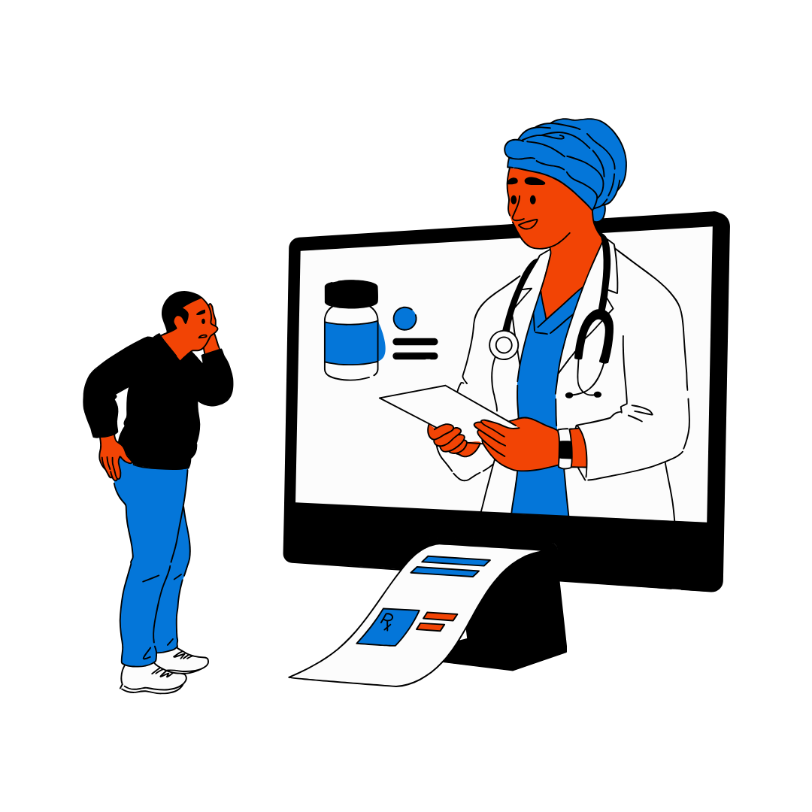

Isaiah Odunsi
Welcome
Work
Contact + Resume
My Projects
The Lost Initiative
Contextual Inquiry: Understanding Player Decision-Making in Animal Crossing: New Horizons
Website Critique: CurrentAI.me

UX Research: SAAS Healthcare Application